My Lists
A list is a selection for a purpose. Examples are this week's dinners, one birthday party, a class plan or a gig set list. Lists hold items picked from your libraries, plus notes, section headings, photos, links, videos, files, voice notes and scanned text.
Create a list
- On the My Lists tab, tap +.
- Type a name such as Holiday Baking, and a description if you like.
- Choose the MODE: Simple (Flat list of items) or Groups (Items organised in groups). See below.
- For a list with groups, choose how groups are named under IDENTIFY GROUPS BY: Date (e.g. 2026-10-04) or Custom Label (e.g. Weekend · Slow and Sweet).
- Tap Create List.
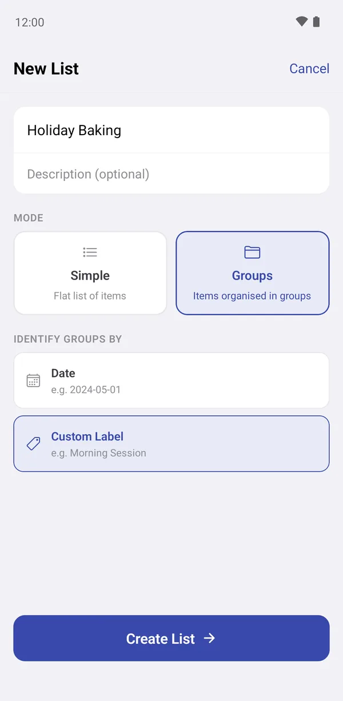
Simple lists and lists with groups
🎂 Sam's Birthday Dinner is a Simple list: one evening, one list of things. Tapping it goes straight to its items.
🍲 This Week's Meals uses Groups: Dinners · Mon to Fri and Weekend · Slow and Sweet. Tapping it shows the groups first, each with its own items and progress. Use groups when a list repeats: a weekly plan, a class that meets many times, a set list per gig.
You can switch a list between the two later. Long-press the list on the My Lists tab and choose Edit. A list can only become Simple when it has one group left.
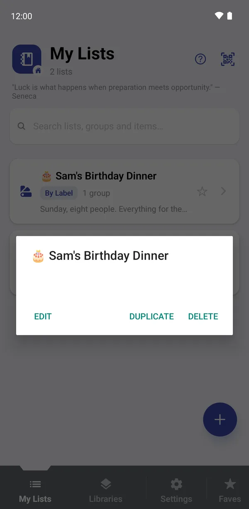
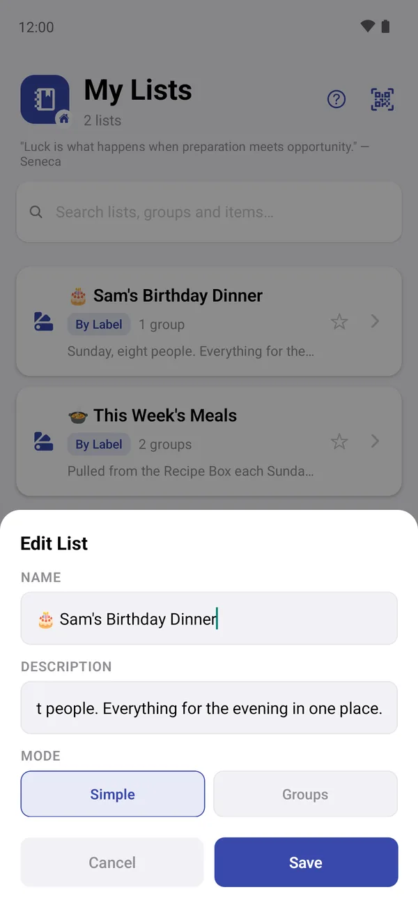
Working with groups
Inside a list with groups you'll see each group's name, item count, notes and a small progress circle that fills as items are marked done.
- Tap + to add a New Group. Give it a date or label and optional Notes, such as Sam's birthday Sunday.
- Sort groups by Name, Created or Modified. Tap the same button again to reverse the order.
- Long-press a group to Edit Name, Duplicate Group (handy for next week's plan) or Delete Group.
- Tap ☆ to add a group to your favourites.
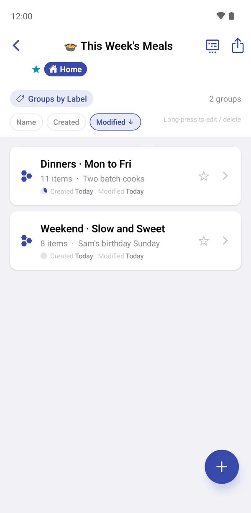
Open a group to see its items. Library items show their summary fields (Italian · 15 · Easy) and which library they came from. Section headings such as MONDAY break the list into parts, and a green tick marks items that are done.
The buttons along the top are:
- ≡: reorder mode.
- ▤: field visibility.
- Share: see Sharing.
- •••: Reset Progress, which clears every tick in the group.
Tap any item to open it in the player.
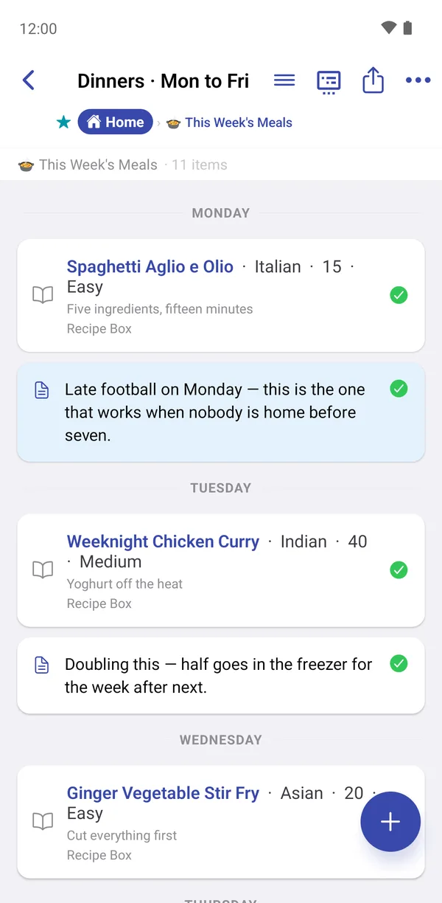
Add items from a library
Tap + inside a list or group to open Add to List, then choose what to add:
- Library Item: one or more items from a library.
- Note, Section Divider: text of your own.
- Photo, Video, File, URL: media and links.
- Audio Note: record your voice, with live transcription.
- Scan Text: read text from a photo.
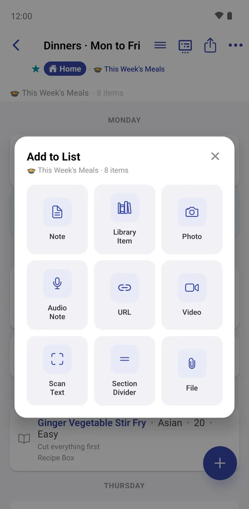
Choosing Library Item opens Add Items from Library:
- Check the library next to From:. Tap it to switch to another library.
- Search if you need to.
@field: textworks here too, and the chips sort the list. - Tick the items you want. Items already in this group are marked Already added.
- Tap Add 2 Items (the number matches your selection).
The ⓘ button previews an item, and the clock shows where it has been used before. That's useful for avoiding the same dinner two weeks running.
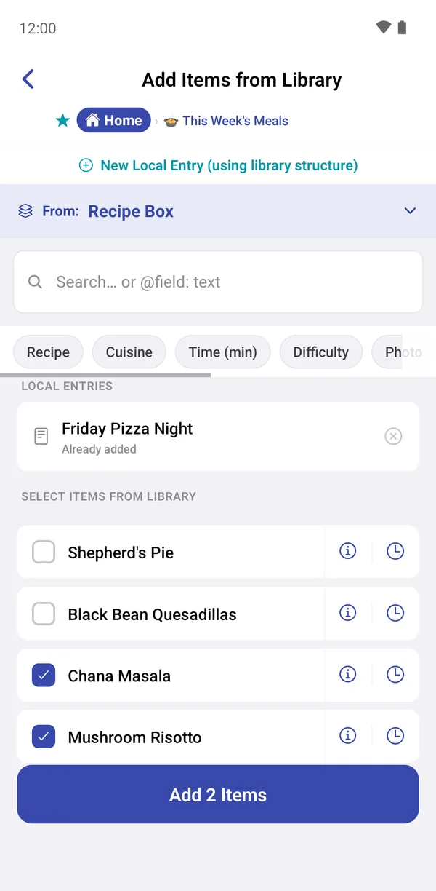
Local entries
Sometimes you need something in a list that isn't worth keeping in the library, like a one-off Friday Pizza Night. A local entry uses the library's fields but lives only in this list.
- In Add Items from Library, tap New Local Entry (using library structure).
- Fill in the fields, exactly as for a library item.
- Tap Add.
Local entries are marked Local entry in the list. If it turns out to be a keeper, open it and tap Save to Library to make it a normal library item.
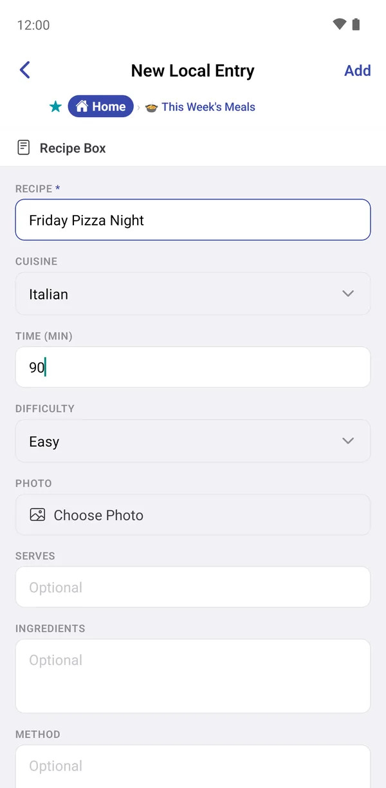
Notes, sections, photos, links and more
Sam's Birthday Dinner mixes every kind of item:
- Section Divider: a heading such as BEFORE THE DAY or CAKE. Sections aren't counted as items and don't need ticking.
- Note: free text in one of six tile colours (yellow, green, blue, pink, lavender, peach).
- File: the Shopping list.pdf. Tap to open it in another app.
- URL: a link with a title, such as Birthday cake ideas.
- Photo and Video: from the camera, gallery or files, each with a description.
To change a note, photo, video, file or link later, long-press it and choose Edit (or Edit Description).
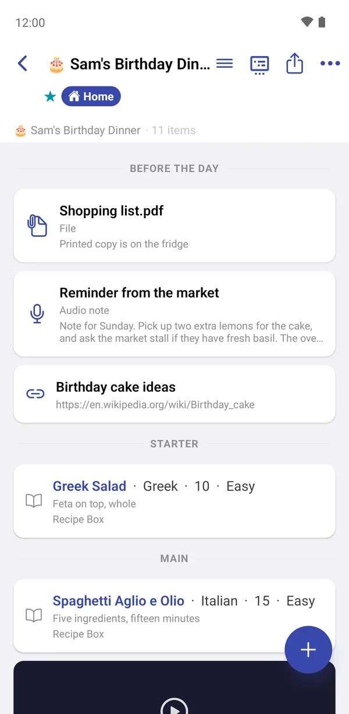
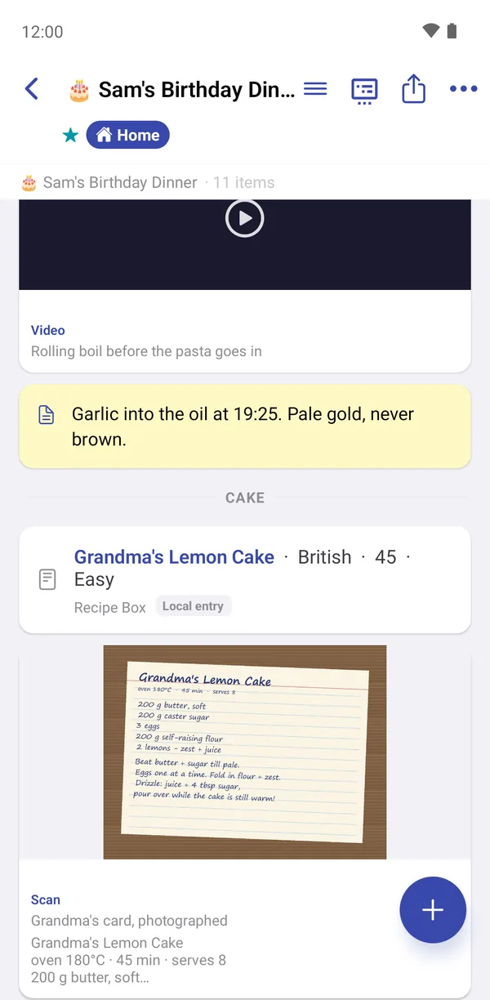
Audio notes
An audio note records your voice and, if Live transcription is on, writes down what you say as you speak. The Reminder from the market note in Sam's Birthday Dinner was made this way.
- Tap + → Audio Note.
- Check the Language, then tap Start Recording. You can pause and carry on.
- When you stop, add a description, correct the transcript if needed, and save.
ListHive asks for microphone permission the first time. Live transcription needs Android 13 or later. On older phones you record first, and ListHive offers to transcribe the recording afterwards.
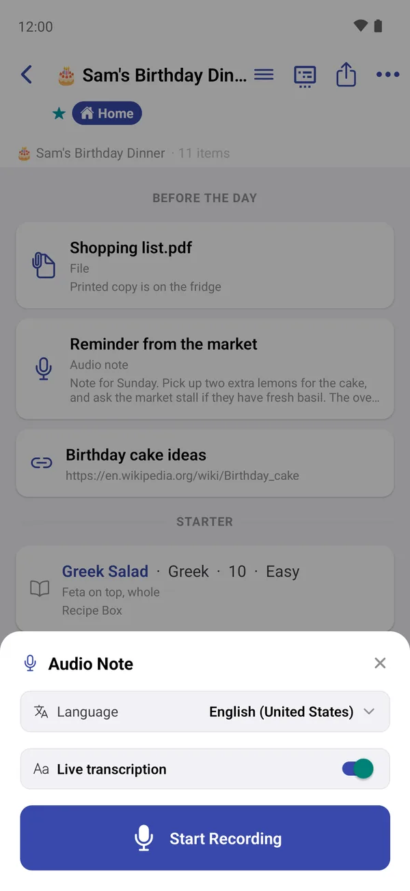
Scan text from a photo
Scan Text reads the words in a photo, such as a printed page, a label or a handwritten recipe card, and turns them into text you can search and copy.
- Tap + → Scan Text.
- Choose the Language / script (Latin covers English and most European languages).
- Tap Choose an Image to take a photo or pick one.
- Check the Scanned text, then choose Save Image + Text, Image Only or Text Note Only.
The first scan in each script downloads a small language pack, so you need to be online the first time. If you see “language pack is still downloading”, wait a minute and tap Rescan.
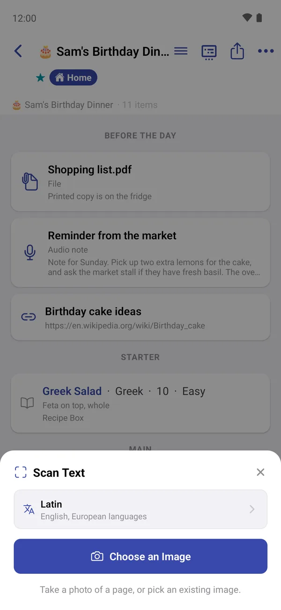
Reorder, move, copy and remove
Long-press any item for its menu:
- Select: start selecting several items. The bar at the bottom then offers Share, Move, Copy and Remove.
- Toggle Done: tick or untick without opening the player.
- Duplicate: an extra copy in the same group.
- Move to… / Copy to…: send it to another group or list.
- Remove from group: takes it out of this list only. The library item is not deleted.
To change the order, tap ≡ at the top, then long-press and drag items. Tap Done to save.
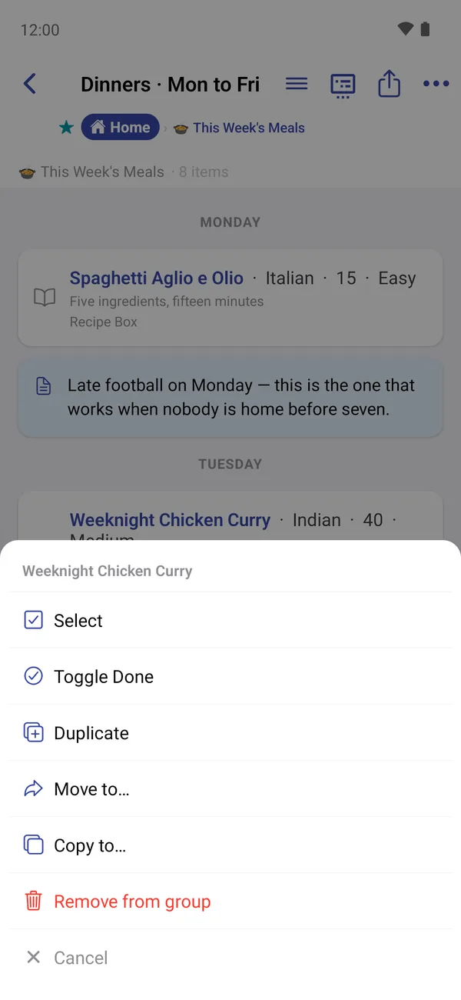
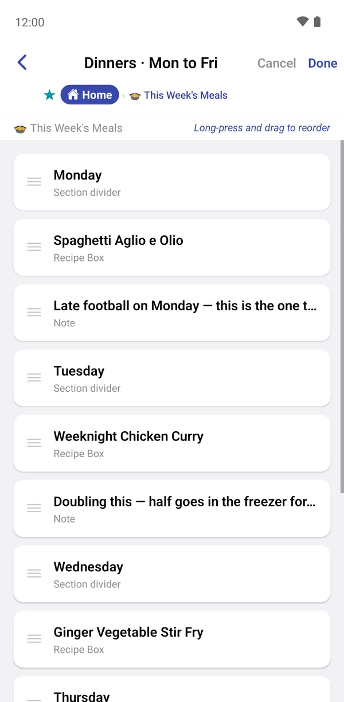
Choose which fields show
Tap ▤ at the top of a list or group to decide, field by field:
- View: whether the field is shown when you play the list;
- Share: whether it's included when you share the list as text or a picture.
For example, hide Method when sharing a menu with guests, but keep it in view for yourself. The icon turns orange when a group has its own settings.
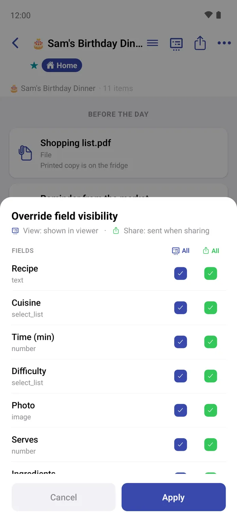
Search all your lists
The search box at the top of the My Lists tab looks through every list, group and item at once. Type at least two letters and results appear under Lists, Groups and Items. Tap a result to jump straight to it.